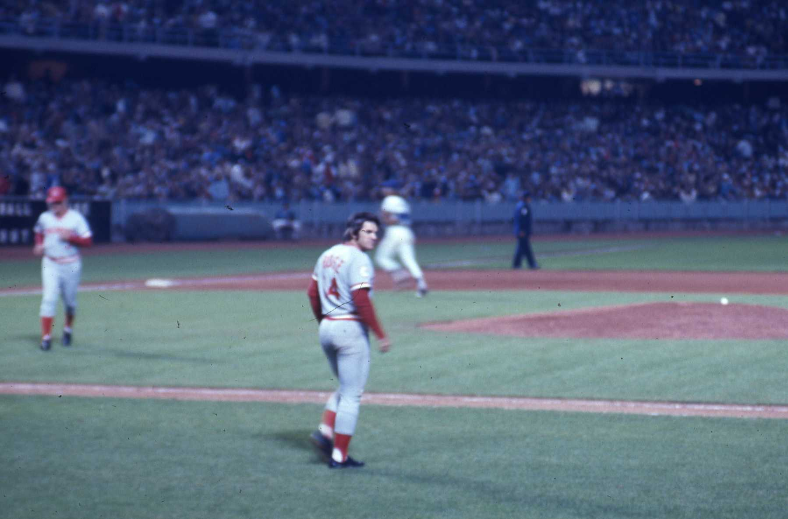

The 1975 Cincinnati Reds
The 1975 Cincinnati Reds, also known as the "Big Red Machine," were a dominant force in Major League Baseball. Managed by Sparky Anderson, the team featured a lineup of future Hall of Famers, including Johnny Bench, Joe Morgan, Tony Perez, and Pete Rose. The Reds finished the regular season with a record of 108-54, securing the National League West division title. In the postseason, they faced the Pittsburgh Pirates in the National League Championship Series (NLCS) and swept them in three games to advance to the World Series. In the World Series, the Reds went up against the Boston Red Sox in a thrilling seven-game series. The series is particularly remembered for Game 6, which featured one of the most iconic moments in baseball history: Carlton Fisk's game-winning home run in the 12th inning that hit the left-field foul pole. However, the Reds bounced back in Game 7 to clinch the championship with a 4-3 victory, winning the series four games to three. Joe Morgan was named the World Series Most Valuable Player (MVP) for his outstanding performance throughout the series. The 1975 Cincinnati Reds are celebrated as one of the greatest teams in baseball history, known for their powerful offense, solid defense, and exceptional teamwork.
| Player Name | Position | BA | HR |
|---|---|---|---|
| Gary Nolan | Pitcher | 3.16 ERA | 74 Ks |
| Johnny Bench | Catcher | .283 | 28 |
| Tony Pérez | First Baseman | .282 | 20 |
| Joe Morgan | Second Baseman | .327 | 17 |
| Pete Rose | Third Baseman | .317 | 7 |
| Dave Concepción | Shortstop | .274 | 5 |
| George Foster | Left Fielder | .300 | 23 |
| César Gerónimo | Center Fielder | .257 | 6 |
| Ken Griffey Sr. | Right Fielder | .305 | 4 |
| Sparky Anderson | Manager | N/A | N/A |